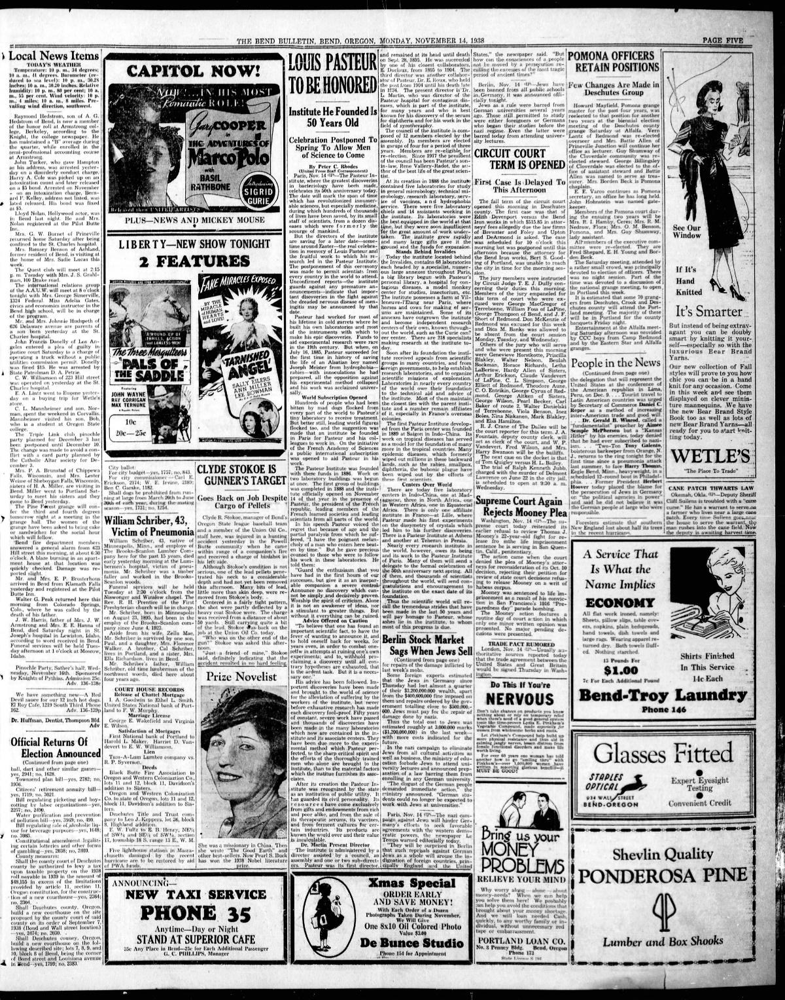

HN HN-515 · November 15, 1938 · War, Conflict & Security > War Crimes, Massacres & Genocide > Systematic persecution
Kristallnacht Indiana seed carried 50,000 arrests; contemporary Northern Advocate and Bend Bulletin did not corroborate that number.
Source: Indianapolis Times, p. 1 — original page; USHMM, Kristallnacht.
Report: The front page declared “Nazis Jail 50,000†amid American protests over the November 9–10 organized anti-Jewish pogrom, and discussed international diplomatic and refugee responses.
Assessment: The violence and concentration-camp arrests were real. The USHMM commonly gives around 30,000 Jewish men arrested, with some histories giving 20,000–30,000; thus 50,000 should be preserved as a contemporaneous headline claim, not a confirmed total. Nazi authorities organized and encouraged the attacks, rather than merely failing to stop random disorder.
Class: Metadata/identity (M)
Recorded difference/concern: Kristallnacht Indiana seed carried 50,000 arrests; contemporary Northern Advocate and Bend Bulletin did not corroborate that number.
Assessment: ~30,000 from later USHMM is a retrospective comparison, not second contemporaneous figure.
Source links: https://paperspast.natlib.govt.nz/newspapers/NA19381115.2.67 https://oregonnews.uoregon.edu/lccn/sn90051770/1938-11-14/ed-1/seq-5/ https://www.hhrcmaine.org/blog/blog/on-this-day-maine-newspapers-react-to-kristallnacht-violent-nazi-anti-jewish-campaign
Authentic scans retrieved from Historic Oregon Newspapers (University of Oregon). Article crops are located using the archive's own ALTO OCR word coordinates and rendered at native crop resolution; page scans are 1,200-pixel-wide renditions. No images were generated, mocked, or retouched.

Not yet acquired. Queued for provider-specific acquisition testing (see source-acquisition manifest).
URL (preserved verbatim): https://newspapers.library.in.gov/?a=d&d=IPT19381115.1.1
Saved research report: Historical_Newspaper_Event_Research_503-527_2026-10-23.md
Evidence note: A newspaper report means a historical publication made a claim; it does not establish that claim as fact. Contemporary reporting is separated from later scholarly context and our own assessment.